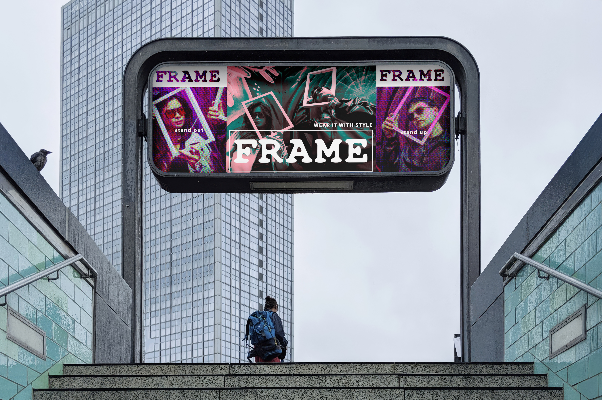
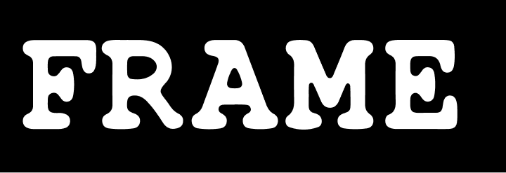

The style is in the details. FRAME comes packed for jungle windows, bus trips, cinemas or the sun itself. Wherever you're looking, the focus is on you.

Traditional eyewear was built to fit in. FRAME wants to stand out. Our Italian collection merges modern streetwear with precision craftsmanship. Designed for the style-conscious individual, each pair aims to turn every street into your runway. Clothes go with the seasons, but perspective is permanent.
Step out - Stand out - WEAR IT WITH STYLE.
Our mission remains clear: to connect with modern, style-conscious individuals through frames that make a statement. Every glass tells a story, every frame opens a new perspective. Frame the world around you.
Welcome to
